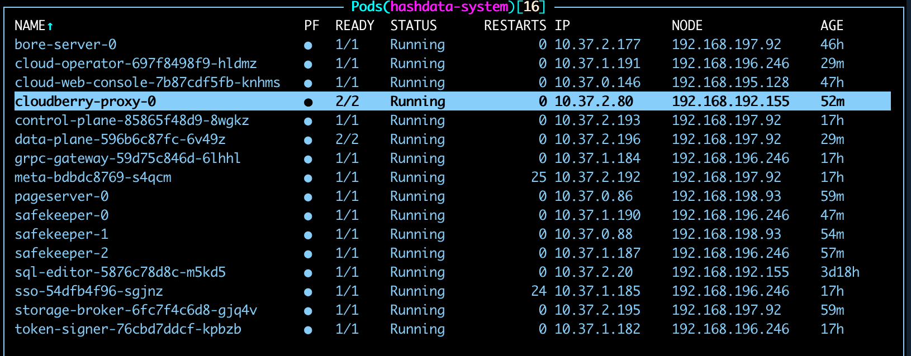
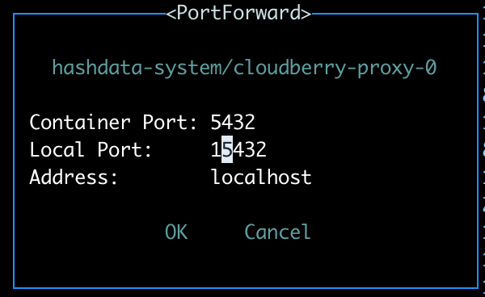
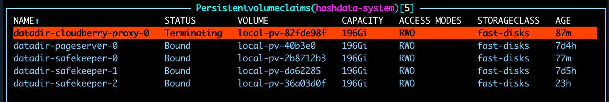
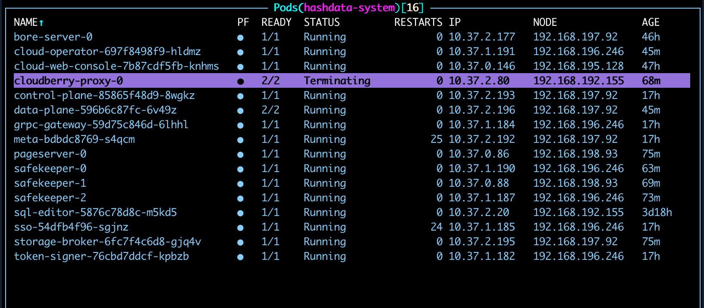
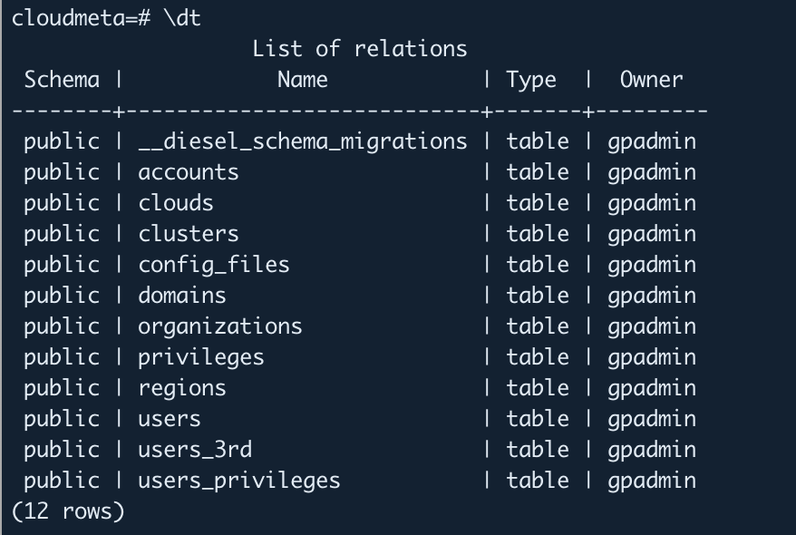
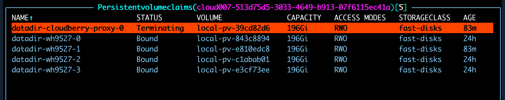
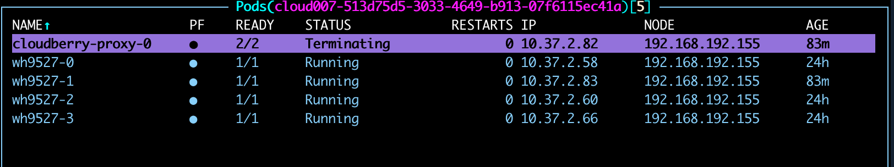
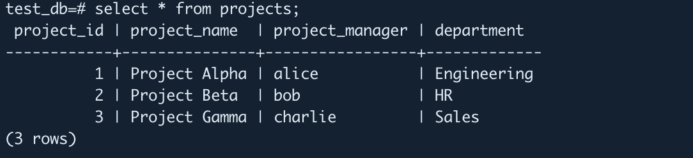
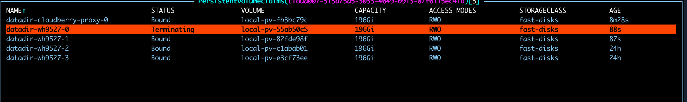
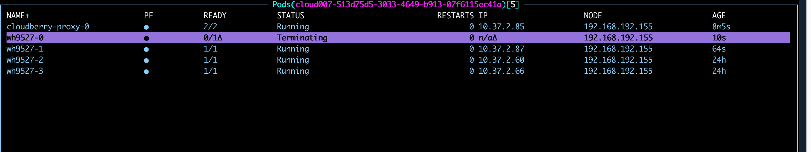

Cluster Failover
SynxDB Elastic v4 features fast failover. When a data warehouse node or other service in the cluster fails, the cluster can quickly detect the failure and automatically recover the failed node and its stored data, ensuring a rapid restoration to the state before the failure.
Failover mechanism
SynxDB Elastic is deployed in a containerized environment based on Kubernetes (K8s). Components and services that form the database cluster are deployed in different pods and are managed and scheduled by the K8s cluster.
When a data warehouse node (Segment), data warehouse proxy service, or cluster-level control service in a SynxDB Elastic cluster fails, K8s can automatically restart the corresponding Pod and re-associate its Persistent Volume in a short time. Data from before the failure is completely preserved and restored. The restarted Pod has the same network configuration as before the failure. Once the failed Pod restarts and enters the Running state, the database can resume normal operation.
Note: Before the failed Pod enters the Running state, the database cluster or the data warehouse corresponding to the Pod will not function normally.
Failover scenarios
This section lists the following failover scenarios and provides corresponding examples.
Failover for cluster metadata proxy service (example Pod:
cloudberry-proxy-0)Failover for cluster metadata
safekeeperservice (example Pod:safekeeper-0)Failover for cluster metadata
pageserverservice (example Pod:pageserver-0)Failover for data warehouse proxy service in the cluster (example Pod:
cloudberry-proxy-0)Failover for data warehouse node in the cluster (example Pod:
wh9527-0)
The following examples simulate a failure by deleting the Pod of the corresponding service in the K8s cluster. After deleting the Pod, the success of the failover is determined by observing the Pod restart process and testing the functionality of the corresponding module in the database.
Prerequisites
Before proceeding with the following tests, ensure the following prerequisites are met:
An example SynxDB Elastic cluster has been created and is accessible.
The Kubernetes command-line tool
kubectland thek9sconsole are installed locally.
Cluster metadata proxy service failover
This example simulates the failover of the SynxDB Elastic cluster metadata proxy service after a failure.
Access the
k9sconsole and locate thecloudberry-proxy-0Pod in thesynxdb-systemnamespace.
Set a local forwarding port for
cloudberry-proxy-0. Useshift + fto open the port forwarding settings, enter the container port (default is5432) and the local port to forward to. The address can be the defaultlocalhost.Note: Avoid setting the local port to
5432to prevent conflicts with a local PostgreSQL installation.
Log in to the cluster using the forwarding port and address set in the previous step:
psql -h localhost -p 15432 -U gpadmin -d postgres.Enter the
cloudmetadatabase and verify that data can be accessed:--Enter the cloudmeta database \c cloudmeta --List tables in the current database \dt
In the
k9scluster, switch to the Persistent Volume Claim (PVC) view::pvc. Find the corresponding storage claim and delete it usingCTRL+D.
In the Pod list, delete
cloudberry-proxy-0.
After the Pod is deleted, k8s will restart it. The metadata cluster will be temporarily inaccessible until the Pod’s status returns to
Running.Wait for the Pod to restart. Once its status is
Running, set up local port forwarding again and access thecloudmetadatabase. The database should now be accessible.
Cluster metadata safekeeper service failover
This example simulates the failover of the SynxDB Elastic cluster metadata safekeeper-0 service after a failure. For specific screenshots and commands, refer to the cluster metadata proxy service failover example.
Access the
k9sconsole and locate thesafekeeper-0Pod in thesynxdb-systemnamespace.Switch to the PVC view, find the corresponding storage claim, and delete it.
Delete the
safekeeper-0Pod. k8s will automatically restart it. The database remains accessible during this period.The
safekeeper-0Pod’s status returns toRunning, and the failover is complete.
Cluster metadata pageserver service failover
This example simulates the failover of the SynxDB Elastic cluster metadata pageserver service after a failure. For specific screenshots and commands, refer to the cluster metadata proxy service failover example.
Access the
k9sconsole and locate thepageserver-0Pod in thesynxdb-systemnamespace.Switch to the PVC view, find the corresponding storage claim, and delete it.
Delete the
pageserver-0Pod. k8s will automatically restart it. The database remains accessible during this period.The
pageserver-0Pod’s status returns toRunning, and the failover is complete.
Data warehouse proxy service failover
This example simulates the failover of the SynxDB Elastic data warehouse cluster proxy service after a failure.
In
k9s, go to the data warehouse namespace (e.g.,cloud007-513d75d5-3033-4649-b913-07f6115ec41a+) and locate the proxy service Podcloudberry-proxy-0.Set a local forwarding port for
cloudberry-proxy-0. Useshift + fto open the port forwarding settings, enter the container port (default is5432) and the local port to forward to. The address can be the defaultlocalhost.Log in to the cluster locally using the forwarding port and address set in the previous step:
psql -h localhost -p 15432 -U gpadmin -d postgresCreate a test database and insert test data:
--Creates the database. CREATE DATABASE test_db; --Enters the database. \c test_db; --Creates a table and inserts data. CREATE TABLE projects ( project_id SERIAL PRIMARY KEY, project_name TEXT, project_manager TEXT, department TEXT ) USING heap; INSERT INTO projects (project_name, project_manager, department) VALUES ('Project Alpha', 'Alice', 'Engineering'), ('Project Beta', 'Bob', 'HR'), ('Project Gamma', 'Charlie', 'Sales');
Delete the
cloudberry-proxy-0Pod and its corresponding PVC. At this point,test_dbwill be temporarily inaccessible.

When the Pod’s status automatically changes to
Running,test_dbbecomes accessible again.
Data warehouse node failover
This example simulates the failover of a SynxDB Elastic cluster data node after a failure.
In
k9s, go to the data warehouse namespace (e.g.,cloud007-513d75d5-3033-4649-b913-07f6115ec41a+) and locate the data node Pod (e.g.,wh9527-0).Go to the PVC list, locate the corresponding PVC, and delete it.

Delete the Pod
wh9527-0. At this point,test_dbwill be briefly inaccessible.
The deleted Pod is automatically restarted. When its status changes to
Running, database access is restored.